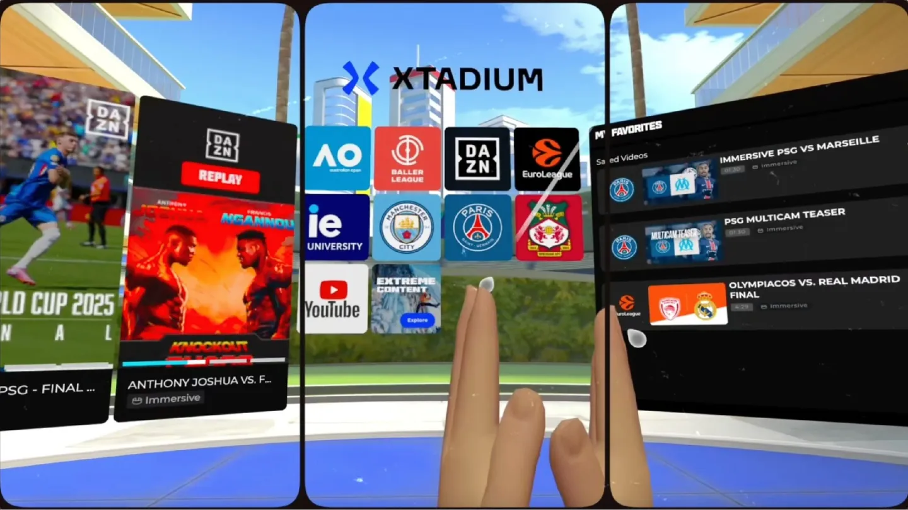

CASE STUDY 01 · YBVR / META · 2024—NOW
Xtadium — sports, from the front row.
The gig
Xtadium is Meta's featured immersive sports app — free on Quest, funded by and built in direct partnership with Meta. Live NBA, UFC, NASCAR and EuroLeague in 8K 180°/360° video, with multi-camera switching, real-time stats and watch parties. I work full-time on the app: UX-focused features, systems architecture and whatever the next Meta deadline needs.
The hard part: a production app growing fast on strict Meta deadlines, refactored continuously — UI, navigation, backend integration, Built-in → URP migration — without ever pausing releases.
By the numbers
90 FPSSTABLE — CRITICAL COMFORT REQ.
8K / 60180° / 360° STREAMS
3 APPSPUBLISHED FROM ONE CODEBASE
3 LANGSFULL LOCALIZATION SYSTEM
SHIPPED WITH: NBA · WNBA · UFC · NASCAR · PSG · NHL · EUROLEAGUE · X GAMES · FOX
From the bug queue to subsystem owner
I joined fixing UI defects. Twenty-one months later I own entire cross-cutting subsystems — spatial UI, notifications, onboarding, localization, spin-offs — and I lead the device-agnostic architecture effort. It was never a title change. It was a scope change.
Systems I own end-to-end
SOLE AUTHOR — PROTOTYPE, PRODUCTION, MAINTENANCE
01
Spatial UI Positioning
In XR the interface doesn't live on a screen — it lives around you. Default placement and scale for every panel, hooked into the headset's native recenter so the UI repositions itself instead of asking permission. Invalid-position rules, distance limits, and a long tail of drift bugs across scene, room and VR↔MR transitions.
02
Notification System
Three generations. Spatial audio and attention levels on the original; then a full re-architecture with per-product views, copy and icons; then migrating the last consumers off the legacy manager and deleting it — closing the tech debt rather than leaving two systems alive.
03
Onboarding & Tutorial
My largest sustained codebase here. Prototyped in Timeline first to validate the concept before committing architecture. Enter and exit at any step, resume, restart, first-launch only. 3D highlighter and coachmarks in world space, plus an immersive video tutorial synced to the step sequence. Design owned the design; I owned the implementation.
04
Localization Pipeline
EN / ES / DE, built as a customization capability rather than a fixed translation. Two iterations: strings first, then culture data — date formats and regional variants. Shared dictionaries across separate Unity projects, with key sanitation and reference-repair tooling.
05
Spin-off Architecture
The reusable base plus the feature switching that lets a whole separate product ship from this codebase — same systems, different skin, features on or off per product. Three apps on the Meta Store run on it.
06
Engagement Features
Content voting with particle effects and its own behavior inside watch parties, session-gated favourites, app-rating modal, content and duration tags, and headset-calendar integration — feasibility research first, then the flow.
Built with the team
CO-AUTHORED — MY SHARE, NOT THE WHOLE SYSTEM
CO-AUTHORED
UI Components & Design Toolkit
The component system and the design-system package that grew out of it: asset library, global bindings, custom UI Toolkit editors — including a matrix editor for button states. The outcome that matters: layout stopped going through engineering. Design now builds the prefabs and the pure UI behaviour; we wire the logic.
CO-AUTHORED
XRI + OpenXR Migration
Team migration onto Unity's XR Interaction Toolkit rig, recovering every dependent interaction: near-far interactors, reticle, fist-grab, panel and bar handling, 3D object interaction. The technical base that makes multi-device viable.
CO-AUTHORED
Immersive Video Playback
Shared with the tech lead. Playback controls and slow-motion menu, the multi-camera map with 7+ cameras, viewport ordering and camera pinning on low-latency feeds, plus 3D environments loaded and unloaded with the content.
CO-AUTHORED
Space Navigation
Co-designed with the tech lead: room-to-room travel with history and a back stack, loading screens between spaces, hub customization, and the spaces menu in the personal UI.
CURRENTLY LEADING — 2026
Device-agnostic architecture
Xtadium was built against a single vendor's SDK. I lead the work to isolate those vendor-specific dependencies — avatar profiles among them — and turn them into cross-cutting, device-agnostic functionality, so every product on this codebase can be built for more than one target from the same project.
HIGHLIGHT — SPIN-OFF SYSTEM
One codebase, three apps
The feature-flag base I built lets a whole app ship from Xtadium's codebase — same systems, different skin, features switched on or off per product.



HIGHLIGHT — REAL-TIME TELEMETRY, 100+ CARS
NASCAR 3D Tabletop
An interactive 3D miniature of the racetrack — grab it, move it, rotate it — replaying the race synced frame-accurate with video playback. Real telemetry streamed in chunks from an external provider and consumed identically in live and VOD, driving 100+ cars on screen at once. I built the entire user experience and its integration inside Xtadium.
STATUS — INTERNAL R&D BUILD. FULLY DEVELOPED, NEVER PUBLICLY RELEASED.
PART OF THE SAME SYSTEM
Live Leaderboard
The tabletop's companion panel — same feature, same author. The full field ranked live, with per-driver focus and hide controls that drive what the miniature shows. Pinned driver cards keep speed and interval telemetry in view while the race runs, fed by the same chunked stream in live and VOD alike. Participant selection, handle placement, miniature scaling and teardown on exit all sit in here too.